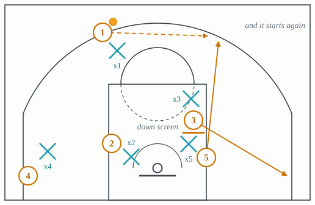

3.9: Continuity and Read-Based Systems
Chapter 3: Offense
A set play ends. It gets the shot it was designed for, or it does not, and either way the possession has to start again with fewer seconds on the clock. A continuity does not end: it returns to its own starting shape, so the same sequence can be run again immediately, and again, until the defense makes a mistake or the shot clock runs out. A read-based system is looser still: it has no sequence at all, only rules that say what each player does in response to what the ball and the defense do.
The three systems in this lecture are whole offenses rather than actions, which is why each gets one card covering the system and not one per beat. Section 1 is the Princeton offense, read-based, built on the high post and the back cut. Section 2 is Flex, the clearest continuity in the sport. Section 3 is dribble drive motion, a spread system with no post player at all. Section 4 is what they have in common and what makes a team choose one.
1 Princeton
The Princeton offense is built on two things: a big who can pass from the high post, and five players who will cut to the rim the instant they are denied. The ball goes to the high post; the passer is then either open to cut off him, or is being denied, in which case he back cuts and the high post drops the ball to him at the rim, as in Figure 1. There is no called sequence. Every option is a rule about what the defense has just done, which is why the offense can be run at any speed and why a team that is patient with it gets a layup out of a possession that looked like nothing.

- Setup
- Five players spaced outside the arc, or four out with one at the high post. The big at the free-throw line or an elbow, facing the ball. Everyone within one pass of the ball.
- Trigger
- The entry pass to the high post.
- Read
- The passer reads his own defender: denied, back cut; not denied, cut off the big’s shoulder for a handoff. The high post reads in order: the back cutter, the shooter whose defender helped on the cut, then his own shot or drive against a defender who has to stay home for both. Anyone whose cut is covered clears to a spot and the next player runs the same read.
- Payoff
- A layup off a back cut, or an open shot from a defense that stopped denying to prevent the back cut.
- Beaten by
- Refusing to deny: the defenders play a step off, concede the catch on the perimeter and take away the cuts, which makes the offense shoot over a set defense. That is the pack line idea of lecture 4.3 applied to a cutting team.
2 Flex
Flex is a continuity, and the clearest one to learn because its unit is two screens. A player cuts across the lane off a cross screen at the block, which is the flex cut; the man who set that cross screen then receives a pin-down from the top and comes up to the slot, which is the screen-the-screener half. When that is finished, the floor is back in the shape it started in, mirrored, and the same two screens can be run again on the other side, as in Figure 2 and Figure 3.


- Setup
- Four players around the perimeter at the two slots and two corners, one player at a block. The ball at a slot.
- Trigger
- The ball is reversed to the other slot, which starts the flex cut on the new weak side.
- Read
- The flex cutter reads his defender at the cross screen: over the top, cut to the rim; under, stop at the block and seal. The screener then reads his own defender at the down screen: chased, curl; under, catch at the slot and shoot. Because the sequence repeats, a defense that guards it well three times still has to guard it a fourth, and the offense is looking for the one repetition where a defender is late.
- Payoff
- A layup on the flex cut or a jump shot at the slot, from a sequence that can be run until one defender makes a mistake.
- Beaten by
- Switching both screens, which is easy when all five players are similar in size and hard otherwise; or a defender who goes under the cross screen every time and lives with the seal. Lecture 4.5.
3 Dribble drive motion
Dribble drive motion removes the post player from the lane on purpose. Four players stand outside the arc and the fifth waits in the weak-side dunker spot, so the lane is empty from the free-throw line to the rim. The offense is then one thing repeated: drive a gap, make the help defender choose, and pass to whoever he left, as in Figure 4. There are no screens in the base offense, which is what distinguishes it from everything else in this chapter: the advantage comes from the dribble and the spacing rather than from a body placed in someone’s path.

- Setup
- 4-out 1-in with the one big in the weak-side dunker spot, never in the lane. Two players in the corners, two above the arc, a double gap on at least one side.
- Trigger
- The handler attacks a gap.
- Read
- The driver reads the weak-side help. Nobody helps: layup. The low man helps at the rim: the corner he left is open. The nail defender steps across: the drop-off to the dunker spot. The driver’s own defender recovers in front: the driver retreats and the next player attacks the gap that has now opened.
- Payoff
- A layup, a corner three, or a drop-off, chosen by the one defender who had to guard two players.
- Beaten by
- Guarding the drive with one man and never helping, which requires defenders who can stay in front; or a defense that walls off the middle and concedes the pull-up. Lecture 4.4.
4 What the three have in common
None of them is a play. Each is a set of rules that can be run for a whole possession, and a team chooses between them on the basis of its players rather than its opponent. Princeton needs a passing big and patient cutters. Flex needs five players who can screen and catch, and rewards a team whose players are similar in size. Dribble drive needs guards who beat their man off the dribble and shooters in both corners. A team that picks the wrong one runs it badly against every opponent, which is why the choice is a roster decision and not a game plan.
What they share with the set plays of lecture 3.8 is that both must eventually produce one of the actions of lectures 3.2 to 3.7. A continuity is a way of arriving at a cross screen or a back cut again and again; a set play is a way of arriving at one of them once, on purpose, at a chosen moment. The vocabulary is the same, and it is the vocabulary rather than the system that a viewer needs in order to follow what is happening.
Two more systems are named by one publisher only and therefore have no entry here: the swing offense, a continuity built on a shuffle screen from the block to the wing with the cutter posting up, and the triangle offense, a continuity built on a three-player triangle on one side of the floor with the post as its hub. Both are described in data/sources/glossary_diff_2026-09-21.md, and both will get entries if a second independent source names them.
The idea to carry into lecture 3.10 is that every system in this lecture depends on spacing. Princeton needs its cutters one pass apart, Flex needs its corners filled, dribble drive needs a double gap. The next lecture is about the floor itself: where the spots are, what the alignments are called, and why the distance between two attackers decides what one defender can do.